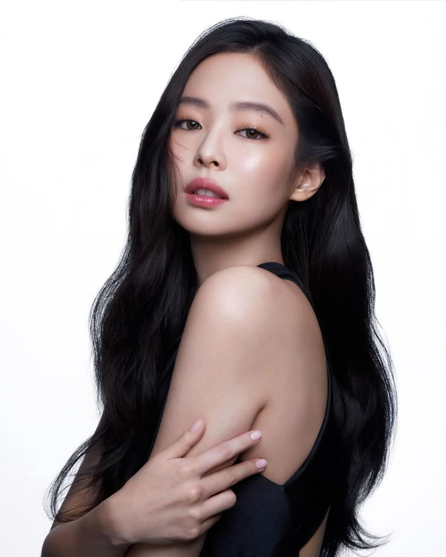
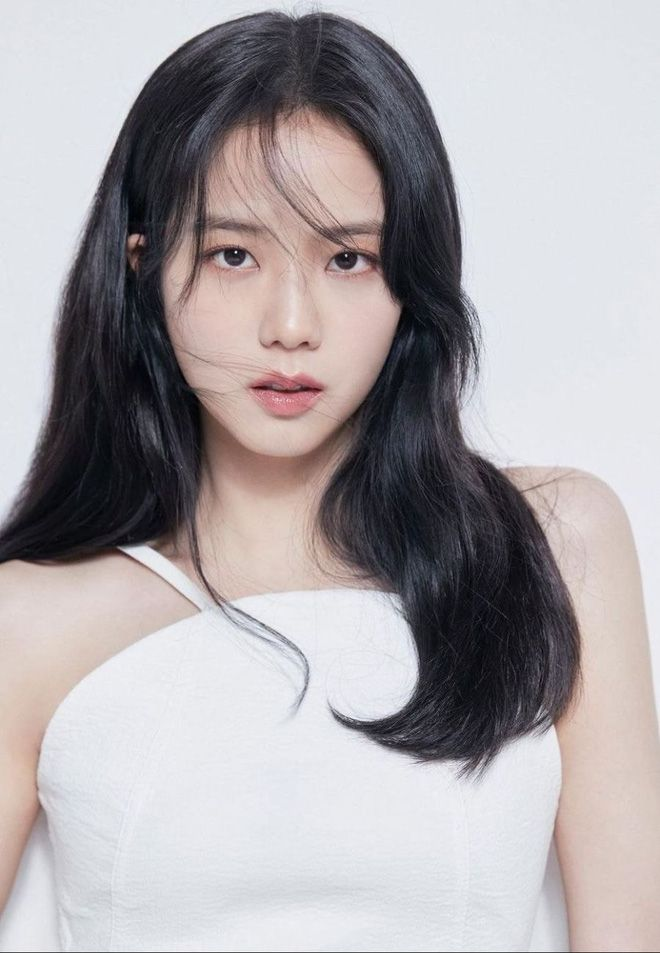
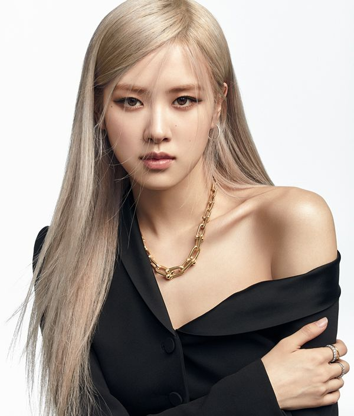

BLACPINK Blackpink is a South Korean girl group formed by YG Entertainment. The group is composed of four members: Jisoo, Jennie, Rosé, and Lisa. Blackpink debuted in August 2016 with their single album Square One, which featured "Whistle" and "Boombayah", their first number-one entries on South Korea's Circle Digital Chart and the US Billboard World Digital Songs chart, respectively. Blackpink is the highest-charting Korean girl group on the US Billboard Hot 100, peaking at number 13 with "Ice Cream" (2020), and on the US Billboard 200, peaking at number one with Born Pink (2022). Blackpink's studio albums The Album (2020) and Born Pink each broke the record for the best-selling album by a female act in South Korea, becoming the first to surpass one million and two million copies sold, respectively. Born Pink was the first album by a girl group to reach number one on the Billboard 200 since Danity Kane in 2008, and it set two Guinness World Records as the first album by a Korean girl group to top the Billboard 200 as well as the UK Albums Chart.
|  |
LEAD VOCALIST - Jennie, the group's main rapper and lead vocalist, was the first member revealed on June 1, 2016.She joined YG Entertainment as a trainee in 2010 after moving back to South Korea from New Zealand. |
|
LEAD RAPPER SUB VOCALIST -Lisa, the group's main dancer, lead rapper, and sub vocalist, was revealed as the second member on June 8, 2016. |
|
|  |
member on June 15. She joined YG entertainment as a trainee in July 2011. |
|  |
LEAD DANCER -Rosé, the group's main vocalist and lead dancer, was the final member to be revealed, on June 22, 2016. |